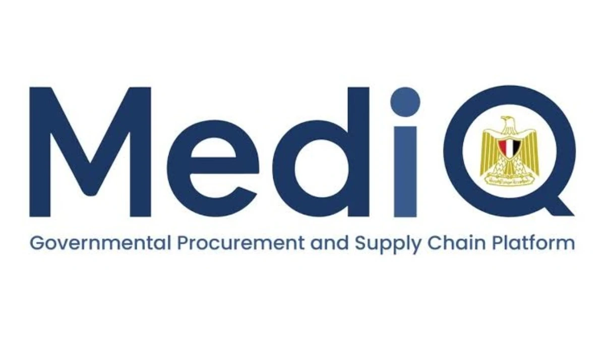
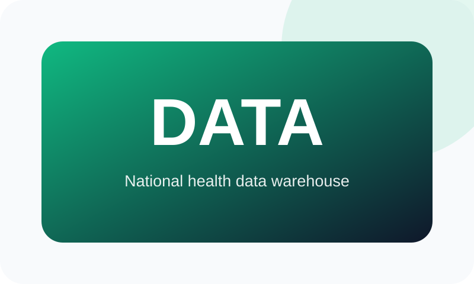
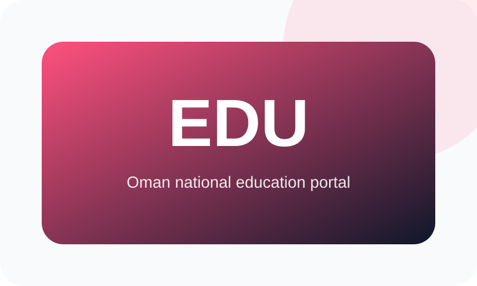

Leadership, Methodology & Institutional Transformation
From digital projects to sustainable institutional capability.
Mahmoud Salama combines executive stakeholder leadership, enterprise architecture, hands-on engineering depth, and accountable delivery across government, healthcare, education, procurement, supply chain, and GCC enterprise environments. This Executive Portfolio is a leadership narrative—not the visual project archive—and focuses on how complex programs are diagnosed, governed, architected, delivered, adopted, and sustained.
Executive Value Proposition
Strategy to execution in complex institutions
Diagnose institutional problems, structure evidence, communicate with senior decision-makers, design practical transformation roadmaps, govern technology portfolios, and convert digital investment into sustainable organizational capability.
Strategy to Execution
Connect executive priorities, operating models, enterprise architecture, program governance, implementation planning, and measurable benefits.
Public-Sector Transformation
Government, healthcare, education, procurement, supply chain, citizen services, and regulated institutional environments.
Architecture & Integration
Enterprise and solution architecture spanning APIs, interoperability, Dynamics 365, data platforms, analytics, and secure application ecosystems.
Leadership & Adoption
Multidisciplinary teams, vendors, stakeholders, quality, release governance, training, documentation, and organizational change.
Transformation & Delivery Methodology
A reusable six-stage model
Evidence before assumption, architecture before fragmentation, security and privacy by design, delivery with ownership, adoption with empathy, and benefits with accountability.
Discover & Diagnose
Clarify objectives, stakeholders, policies, processes, systems, data, risks, constraints, and the evidence baseline.
Define Outcomes & Governance
Agree measurable outcomes, decision rights, ownership, architecture principles, risk acceptance, and escalation.
Design the Target State
Develop the operating model, capability map, enterprise architecture, data model, integration approach, security controls, and roadmap.
Deliver Controlled Increments
Prioritize value, establish program controls, manage vendors, define acceptance criteria, and release usable capabilities in phases.
Enable Adoption & Operations
Prepare roles, procedures, training, support, knowledge transfer, service management, and operational ownership.
Measure, Improve & Sustain
Track benefits, data quality, adoption, service performance, risk, platform health, and continuous-improvement actions.
Selected Programs
Flagship case studies

Led architecture & governance
MedIQ / Unified Procurement & Medical Supply Ecosystem
A governed 10-platform procurement and medical-supply ecosystem supporting 12,000+ public-sector entities, 320,000+ automated validation checks, forecasting and planning, inventory, distribution, supplier interaction, analytics, controls, and adoption.
- Role
- Led architecture & governance
- Period
- UPA portfolio, 2020–Present
- Environment
- Egypt · National public sector
- Evidence
- Portfolio scale + operational metrics
- Last verified
- July 2026

Led architecture
Egypt's National Health Sector Data Warehouse
A governed enterprise data environment for 100+ government institutions, processing 12M+ records daily and contributing to approximately 70% faster executive reporting preparation.
- Role
- Led enterprise data architecture
- Period
- Current UPA portfolio
- Environment
- Egypt · 100+ government institutions
- Evidence
- Verified operational scale + approximate improvement
- Last verified
- July 2026

Directed integration architecture
Microsoft Dynamics 365 ERP & CRM Integration
Controlled integration connecting procurement, financial, stakeholder, operational, reporting, and data platforms through APIs, mapping, validation, reconciliation, monitoring, exception handling, and audit controls.
- Role
- Directed integration architecture
- Period
- Current UPA portfolio
- Environment
- Government enterprise integration
- Evidence
- Architecture and governance outcome
- Last verified
- July 2026

Led full-cycle delivery
Oman National Educational Portal
A national education platform supporting e-learning, content management, academic records, administration, user management, and performance tracking, delivered through cross-border engineering coordination and local e-government alignment.
- Role
- Led full-cycle delivery
- Period
- 2016–2020
- Environment
- Sultanate of Oman · National education
- Evidence
- Program delivery evidence
- Last verified
- July 2026
Professional Contributions
Governance, oversight, and speaking
World Bank Group B-READY Egypt Assessment
Digital Transformation Committee Member, 2025-2026
National Blood Operations Oversight
Board Member appointed by Egypt’s Minister of Health, 2021-2024
National Pharmaceutical Track & Trace
Governance Lead, 2021-2024
Manama Health Congress & Expo
International speaker on bioinformatics and digital health, 2022
Africa Health ExCon
Digital health and technology contributor, 2021-Present
Selected Professional Outputs
Executive, architectural, technical, and operational knowledge products
Publication-safe examples of the formats led, authored, architected, drafted, reviewed, or delivered across institutional programs.
Executive Transformation Case Studies
Institutional challenge, governance, architecture, implementation, impact, and lessons learned.
Technology Strategies & Roadmaps
Priorities, target capabilities, investment sequencing, dependencies, governance, risks, and benefits.
Enterprise & Solution Architecture
Capability views, application landscapes, integration patterns, data flows, security layers, and transition states.
Requirements & Process Design
Stakeholder needs, user journeys, acceptance criteria, controls, traceability, and prioritization.
Integration & API Specifications
Interfaces, mapping, validation, reconciliation, exceptions, monitoring, security, and audit requirements.
Data Governance & Analytics
Master data, data-quality rules, ownership, reporting definitions, KPI frameworks, dashboards, and decision notes.
Governance & Operating Procedures
Decision rights, quality gates, release processes, service procedures, escalation, change control, and handover.
Training & Adoption Materials
Role-based guides, workshops, operating procedures, knowledge bases, and support documentation.
Responsible Portfolio Use
Evidence, contribution, and confidentiality boundaries
Publication-Safe Evidence
Metrics and achievements are limited to current professional records and information suitable for public professional use.
Collaborative Contribution
Program descriptions distinguish work led, architected, delivered, governed, contributed to, or formally supported without claiming sole institutional authorship.
Confidential Information Excluded
Protected data, credentials, supplier-sensitive information, restricted operational metrics, source code, vulnerabilities, and internal configurations are not reproduced.
Supporting Evidence Available
Approved case studies, architecture descriptions, technical specifications, presentations, dashboards, training materials, and professional references may be shared where permission allows.